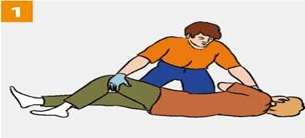

ПЕРВАЯ ПОМОЩЬ ПРИ ОБМОРОКЕ
Признаки: бледность, внезапная кратковременная потеря сознания.

|
Придай пострадавшему устойчивое боковое положение, ослабь галстук, расстегни ворот верхней одежды, ослабь брючный ремень, сними обувь, обеспечь доступ свежего воздуха. |
Если сознание не восстанавливается более 3–5 минут вызови (самостоятельно или с помощью окружающих) скорую медицинскую помощь.
В любом случае следует обратится к врачу для обследования и определения причины обморока.
Источник:
http://www.culture.mchs.gov.ru/medical/algorithms_of_first_aid_in_acute_and_urgent_conditions/first_aid_for_fainting/
ТЕЛЕФОН СЛУЖБЫ СПАСЕНИЯ: 112